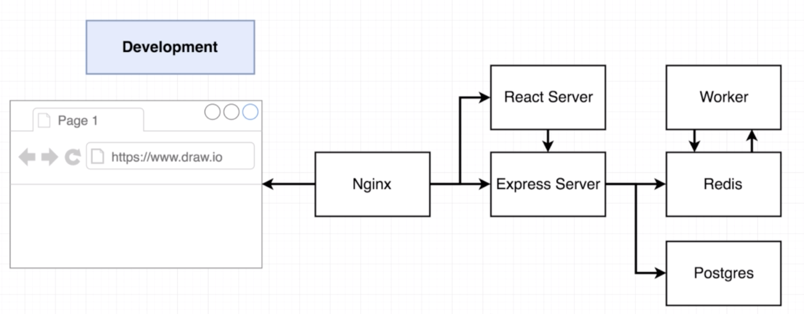
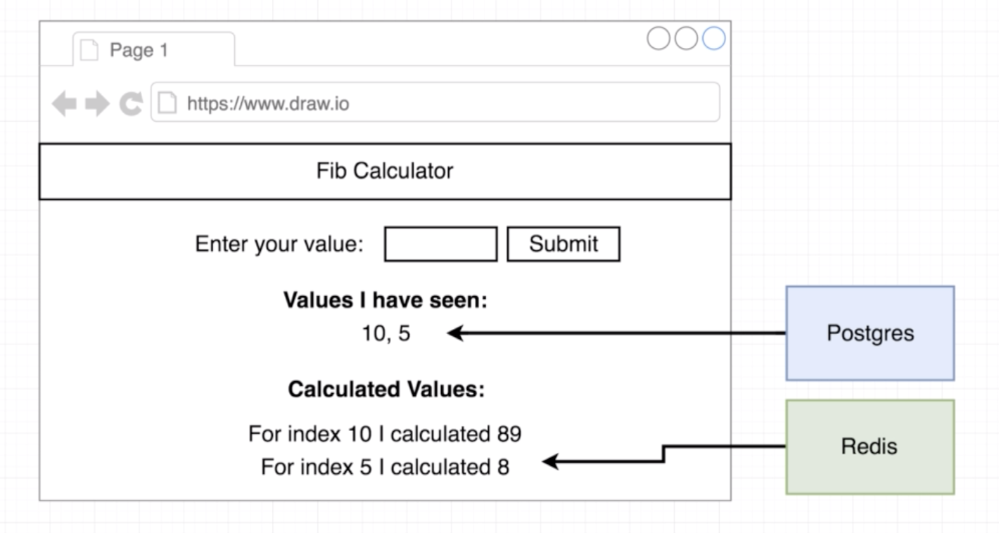
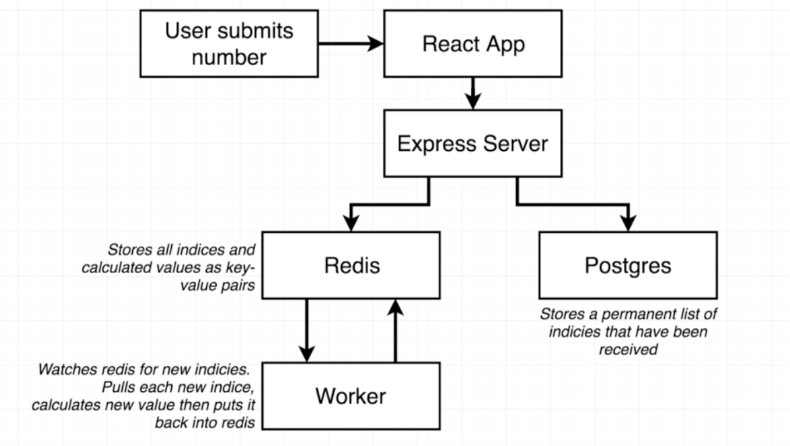

Multi-Container Deployment (A Fibonacci App Example)
App Working Flow

- Nginx routes to react server if the request ask for frontend assets.
- Nginx routes to express server if the request ask for access for submitting and retrieving.

- Redis for temporary or cached data.
- Postgres for permanent data.

- Worker watches and retrieve new indices in Redis and return new calculated value.